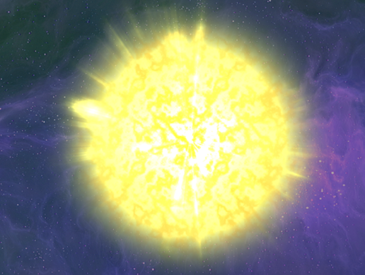

|

AnimancerA Unity plugin which allows you to play animations on demand and control all their details without any additional setup steps. It solves the major problems with Animator Controllers and can either replace them entirely or work alongside them on the same character. This makes animations much easier to work with in all stages of development from basic prototyping through to maintaining and debugging complex systems.[Animancer Pro] [Animancer Lite] [Documentation] [Help and FAQ] [Support: animancer@kybernetik.com.au] |

Inspector GadgetsA Unity plugin which provides an enhanced Transform Inspector along with various other editor tools to streamline your development workflow.[Inspector Gadgets Pro] [Inspector Gadgets Lite] [Documentation] [Forum] [Support: mail@kybernetik.com.au] |

WeaverA Unity plugin which allows you to avoid using magic strings to reference assets, animations, layers, navigation areas, scenes, and shaders. This makes your code more efficient and robust to improve development productivity as well as runtime performance.[Weaver Pro] [Weaver Lite] [Documentation] [Forum] [Support: mail@kybernetik.com.au] |

UltEventsA Unity plugin which allows you to easily setup and configure persistent event callbacks via the Inspector. It serves the same purpose as the inbuilt UnityEvents, but has superior features with fewer restrictions and an improved Inspector interface which requires fewer clicks to perform individual tasks.[UltEvents] [Documentation] [Forum] [Support: mail@kybernetik.com.au] |

Link & SyncA Unity plugin for importing external assets and easily synchronising changes when they occur.[Link & Sync Pro] [Link & Sync Lite] [Support: mail@kybernetik.com.au] |

Simple Sun ShaderAn easy to use shader for Unity that draws an animated sun with various dynamic parameters. Praise the Sun.[Simple Sun Shader] [Support: mail@kybernetik.com.au] |